AI
6 topics
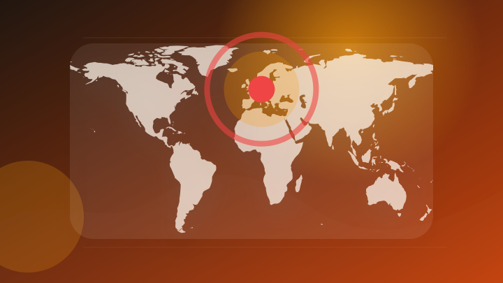
AI生成物に表示義務 禁止行為で制裁金65億円 EU（時事通信）
注目ポイント注目度 67点
Anthropic・OpenAIの相次ぐ不正侵入、実効性ある規制の焦点は #エキスパートトピ（八田真行） - エキスパート
Anthropic・OpenAIの相次ぐ不正侵入、実効性ある規制の焦点は #エキスパートトピ（八田真行）
注目ポイント注目度 67点
Google Earthに画像生成AI「Nano Banana 2」登場、未来予想図や名所の資料作成も
注目ポイント注目度 64点
ニュース OpenAI「GPT‑5.6 Luna」「GPT‑5.6 Terra」の価格を値下げ
注目ポイント注目度 64点
Revolut、有料プラン契約で「ChatGPT Go」が付属 最大12カ月
注目ポイント注目度 64点
ChatGPTとは何が違う？KDDIが“出典の見える生成AI”を開始
注目ポイント注目度 61点
IT業界
6 topics
サイバー攻撃、事前に探知 「脅威狩り」促進―政府：時事ドットコム
注目ポイント注目度 70点
サイバー攻撃にAIで対抗する「Google AI Threat Defense」
注目ポイント注目度 70点
Google Cloud、AIで脆弱性検出から修復まで自動化 - 「Google AI Threat Defense」で実現するAI時代の防御戦略
Google Cloud、AIで脆弱性検出から修復まで自動化 - 「Google AI Threat Defens…
注目ポイント注目度 67点
「DEF CON Aerospace Village」で衛星ハッキング体験コンテンツを展示～世界最高峰のセキュリティカンファレンスで宇宙セキュリティを体験型で発信～ | 脆弱性診断（セキュリティ診断）のGMOサイバーセキュリティ byイエラエ
「DEF CON Aerospace Village」で衛星ハッキング体験コンテンツを展示～世界最高峰のセキュリテ…
注目ポイント注目度 67点
「Google Chrome 151」のセキュリティ修正はかなり大規模、370件に及ぶ脆弱性に対処（窓の杜）
注目ポイント注目度 67点
Google Chrome、370件の脆弱性を修正｜Infoseekニュース
Google Chrome、370件の脆弱性を修正
注目ポイント注目度 67点
政治
6 topics
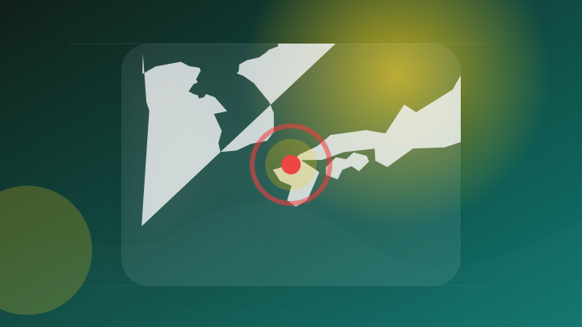
「正直やって良かった」熊本地震発生の夜に自民福岡県議団会長が政治資金パーティー アルコール含む飲食付き、お笑い芸人による余興も
「正直やって良かった」熊本地震発生の夜に自民福岡県議団会長が政治資金パーティー アルコール含む飲食付き、お笑い芸人…
注目ポイント注目度 70点
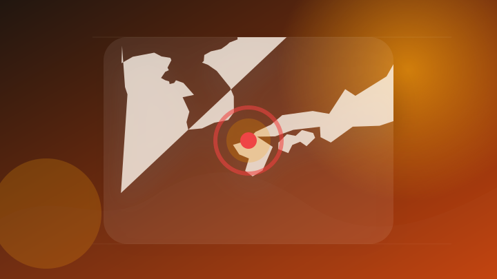
【福岡県議会】地震直後に政治資金「ビアパーティー」 自民党県議団・会長に”辞任”求める声 本人は「対応は今後、検討する」
【福岡県議会】地震直後に政治資金「ビアパーティー」 自民党県議団・会長に”辞任”求める声 本人は「対応は今後、検討…
注目ポイント注目度 70点
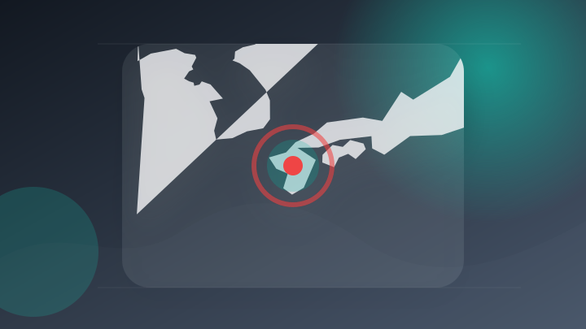
酷暑の避難、政府に「カムチャツカ」の教訓 陸空からクーラー送る [熊本県] [2026年熊本地震]
注目ポイント注目度 70点
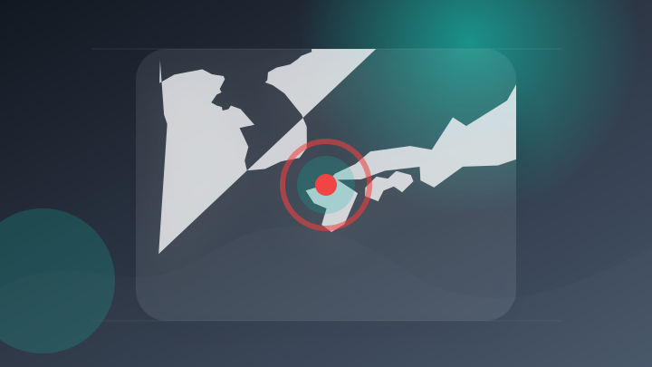
熊本地震直後に政治資金パーティー 福岡県議「やってよかった」 議員辞職求める声も（テレビ朝日系（ANN））
注目ポイント注目度 67点
令和8年7月31日（金）定例閣議案件
注目ポイント注目度 65点
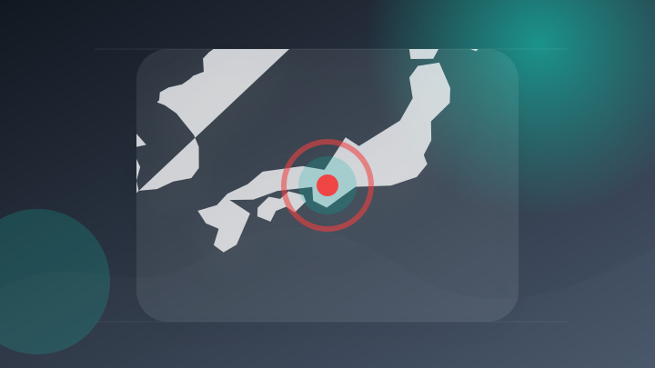
【令和8年7月31日】 奈良平 博史氏（国際油濁補償基金（IOPCF）監査委員選挙の立候補者）による金子大臣への表敬訪問
【令和8年7月31日】 奈良平 博史氏（国際油濁補償基金（IOPCF）監査委員選挙の立候補者）による金子大臣への表…
注目ポイント注目度 65点
社会
6 topics
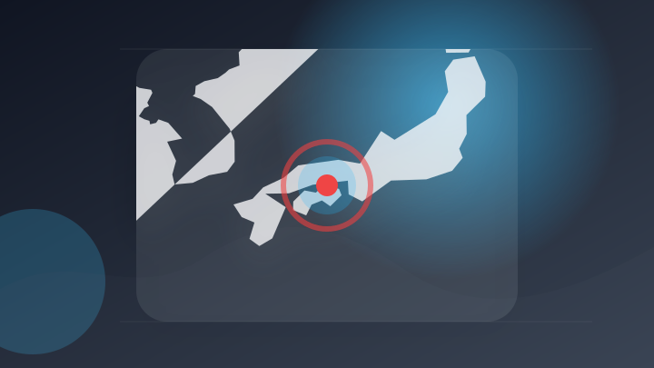
香川 善通寺 患者盗撮疑い逮捕の男性医師 不起訴 高松地検
注目ポイント注目度 70点
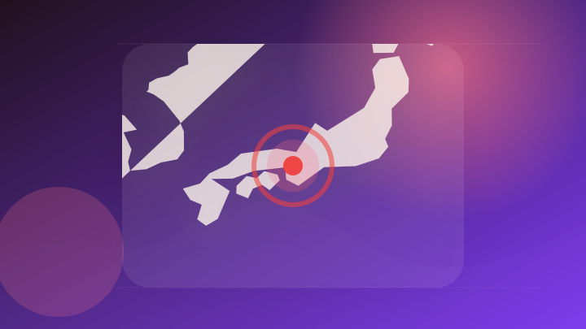
SNSで知り合い「関係ばらす」と少女脅し暴行か 逮捕の男、否認 [大阪府]
注目ポイント注目度 70点
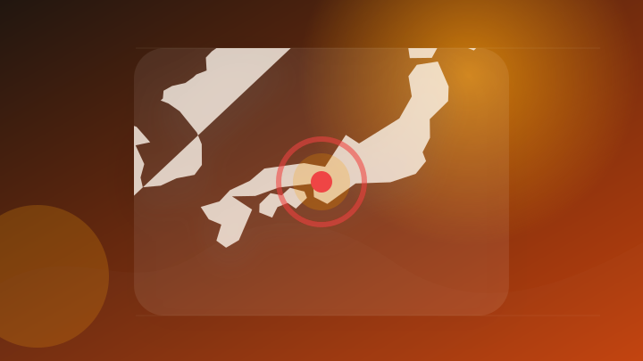
電動自転車、「モペット」に改造か ベトナム人逮捕、ＳＮＳで集客―大阪府警
注目ポイント注目度 70点
ナマコ密漁疑いで構成員など９人逮捕の事件、暴力団事務所を家宅捜索 ゴムボート転覆、男性１人死亡
注目ポイント注目度 67点
軽四貨物車が池に転落、運転の60代男性死亡 同乗女性は窓から脱出し無事 加西|事件・事故
注目ポイント注目度 67点
尼崎でバイクと歩行者衝突 歩行者の30代位の男性死亡
注目ポイント注目度 67点
事件・事故
6 topics
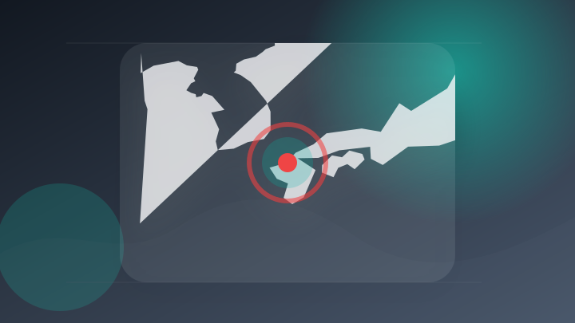
福岡市城南区で無免許運転、事故起こして逃げた容疑で男を逮捕
注目ポイント注目度 70点
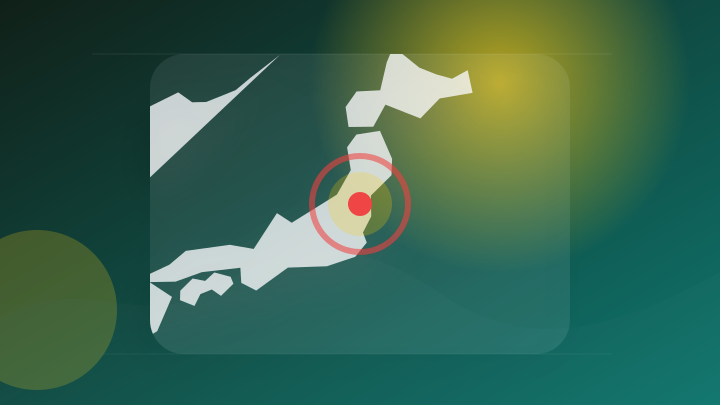
「盗んだことは間違いない」駐車場で乗用車を盗んだ疑い 当時カギは付いたまま 無職の男を逮捕 会津若松市・福島
注目ポイント注目度 70点
詐欺拠点で通訳容疑の男を逮捕 カンボジア拠点の特殊詐欺事件で
注目ポイント注目度 70点
300日間交通死亡事故ゼロを達成
注目ポイントAI・事故｜注目度 67点
“だまされたふり”作戦「受け子」の17歳少年を詐欺未遂容疑で逮捕 類似事件との関連も捜査 札幌市南区
注目ポイント注目度 67点
軽トラック荷台のごみに火を付ける 放火容疑で45歳男逮捕 川西|事件・事故
注目ポイント注目度 67点
災害
6 topics
令和８年熊本地震非常災害対策本部会議
注目ポイント注目度 100点
令和8年熊本地震災害義援金の受付及び募金箱の設置について
注目ポイント独立3媒体｜注目度 98点
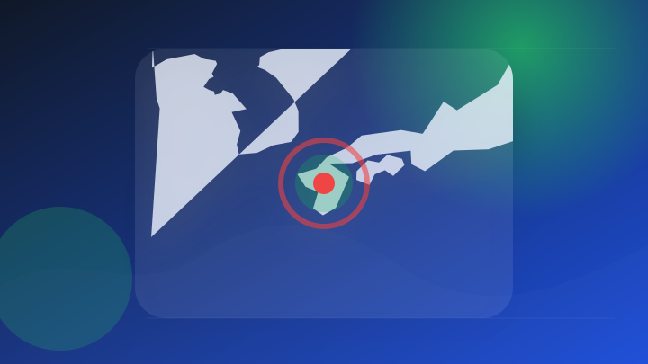
令和8年熊本地震の被害を受けた熊本県内の事業者は中小企業省力化投資補助金（一般型）第7回の申請受付を延長します
注目ポイント注目度 71点
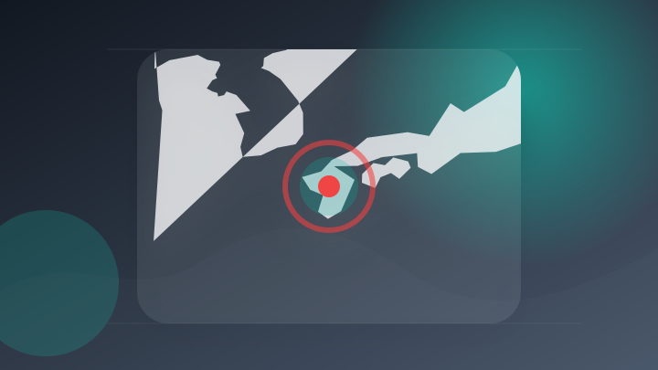
令和８ 年熊本地震災害義援金の受付について
注目ポイント注目度 67点
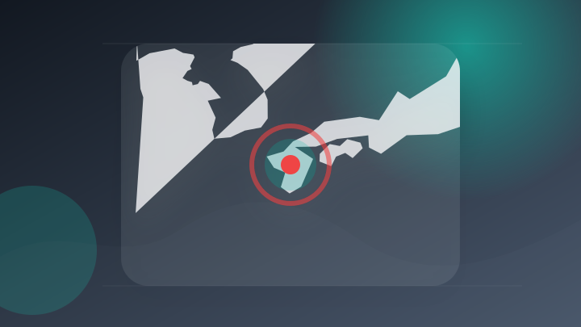
令和8年熊本地震災害への義援金を受け付けています
注目ポイント注目度 67点
「なんで履かせないの？」災害救助犬の“保護靴”に広がる誤解…むしろ犬を危険にさらすケースも（ENCOUNT）
注目ポイント注目度 67点
ライフ
3 topics
科学
5 topics
新潟から全国の研究を加速新潟大学が先端研究設備の全学共用・全国展開へ―文部科学省「先端研究基盤刷新事業（EPOCH）」に採択― | トピックス | ニュース
新潟から全国の研究を加速新潟大学が先端研究設備の全学共用・全国展開へ―文部科学省「先端研究基盤刷新事業（EPOCH…
注目ポイント独立5媒体｜注目度 99点
新文部科学事務次官に矢野文部科学審議官を起用へ 政府が決定
注目ポイント独立2媒体｜注目度 70点
研究者10万人にOpenAI「最上位モデル」無料提供へ 日本でも東大、京大など15大学が対象
注目ポイント注目度 64点
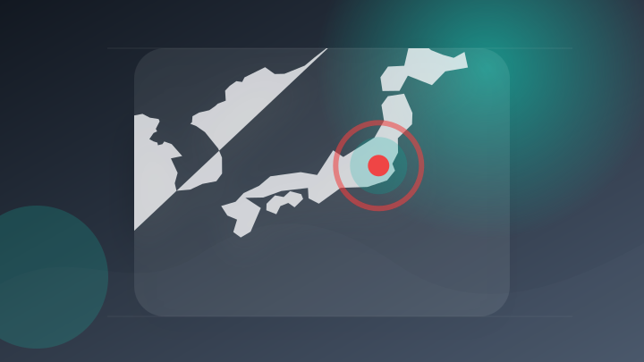
イスラエル民間宇宙飛行士が語る〈民間人が宇宙に行くべき理由〉…日本の宇宙産業への期待そして可能性
注目ポイント独立2媒体｜注目度 61点
松本洋平文部科学大臣記者会見録（令和8年7月31日）
注目ポイント注目度 60点
金融
3 topics
スポーツ
2 topics
経済
6 topics
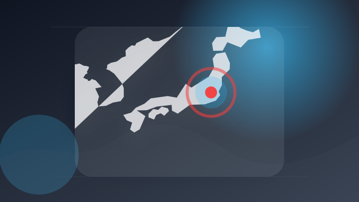
【速報】日経平均株価、3200円超値上がり 国内外の企業決算の好調受け
注目ポイント注目度 64点
株価上昇 AI・半導体需要や好調な企業決算に期待高まり買いが広がる
注目ポイント注目度 64点
【決算解説】純利益46倍のキオクシアは、株価3分の１から「底打ち」するのか
注目ポイント注目度 61点
主力企業決算と日銀展望リポートに注目 - プロに聞く 前場ここを見る
主力企業決算と日銀展望リポートに注目
注目ポイント注目度 61点
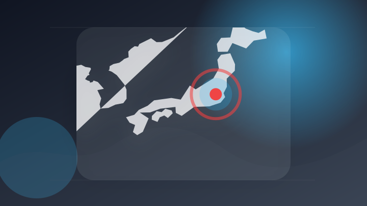
【日本株週間展望】値固め、堅調な企業決算やAI投資への懸念後退（Bloomberg）
注目ポイント注目度 61点
日経平均は2364円高、引き続き企業決算などに関心(フィスコ)
注目ポイント注目度 61点
エンタメ
5 topics
音楽クリエイター逮捕 俳優の女性に性的暴行か – Quebee キュエビー
注目ポイント注目度 67点
TVアニメ『猫と竜』× エンタメ業界特化の人材紹介サービス『エンターエンタ』「エンタメ業界適職診断」Wフォロー＆シェアキャンペーン開始！
TVアニメ『猫と竜』× エンタメ業界特化の人材紹介サービス『エンターエンタ』「エンタメ業界適職診断」Wフォロー＆シ…
注目ポイント注目度 61点
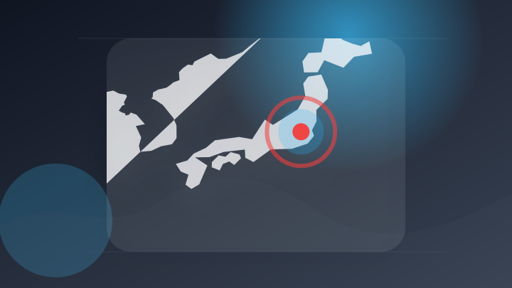
【ゲームエンタメ株前場(7/31)】新作好調の日本一ソフトが堅調 決算発表のコナミGやセルシスさえない SBIと提携のGENDA続伸
【ゲームエンタメ株前場(7/31)】新作好調の日本一ソフトが堅調 決算発表のコナミGやセルシスさえない SBIと提…
注目ポイント注目度 61点
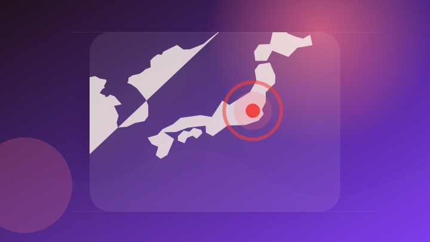
安齊勇馬選手が映画『傀/KAI』制作発表会見に登壇しました
注目ポイント注目度 61点
音楽の周波数の認知に世紀の大発見か 音楽のピッチに関する研究論文を発表
注目ポイント注目度 61点
ゲーム
3 topics
「レゴ ドンキーコング アーケードゲーム」「レゴ どうぶつの森 まめきち＆つぶきち のんびりお散歩」が8月1日発売。
「レゴ ドンキーコング アーケードゲーム」「レゴ どうぶつの森 まめきち＆つぶきち のんびりお散歩」が8月1日発売…
注目ポイント注目度 65点
Nintendo Switch(TM)、PlayStation(R)4/PlayStation(R)5用ソフト『アレサCOLLECTION 1993-1995』本日発売！
Nintendo Switch(TM)、PlayStation(R)4/PlayStation(R)5用ソフト『ア…
注目ポイント注目度 64点
【8月13日追加】「ニンテンドー ゲームキューブ Nintendo Classics」に『スーパーマリオサンシャイン』を追加。
【8月13日追加】「ニンテンドー ゲームキューブ Nintendo Classics」に『スーパーマリオサンシャイ…
注目ポイント注目度 60点